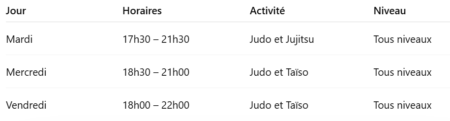

Notre club de judo
Au Judo Club des Achards, nous cultivons un esprit de club à taille humaine où la convivialité, la bienveillance et l’esprit familial sont au cœur de la pratique. Notre objectif : permettre à chacun — enfants, adolescents et adultes — de découvrir et progresser dans le judo, tout en partageant ses valeurs éducatives : respect, entraide et dépassement de soi. Le club s’inscrit pleinement dans la vie locale et contribue à faire vivre le sport pour tous.
Nos cours
Lieu des entraînements 📍
Les cours du Judo Club des Achards se déroulent au dojo situé :
Salle Laëtitia Tignola
Rue Marthe Regnauld
85150 Les Achard
Cette salle accueille l’ensemble des entraînements du club dans un cadre adapté à la pratique du judo.
N’hésitez pas à venir nous rencontrer directement sur place pour découvrir le club et assister à un cours.
Horaires des cours 🥋
Les cours du Judo Club des Achards ont lieu à la Salle Laëtitia Tignola – Rue Marthe Regnauld, 85150 Les Achards.
Mardi
🕠 17h30 – 21h30 Cours de Judo et Jujitsu Tous niveaux
Mercredi
🕡 18h30 – 21h00 Judo et Taïso Tous niveaux
Vendredi
🕕 18h00 – 22h00 Cours de Judo et Taïso Tous niveaux

Rejoignez-nous !
Que vous soyez débutant ou pratiquant confirmé, enfant, adolescent ou adulte, vous êtes les bienvenus pour découvrir le judo dans une ambiance conviviale.
👉 N’hésitez pas à venir essayer un cours et rencontrer l’équipe du club.
Ils nous soutiennent :
Nous remercions nos partenaires
Le Judo Club des Achards tient à remercier sincèrement les entreprises et partenaires qui nous accompagnent et nous font confiance. Leur soutien est essentiel pour permettre au club de poursuivre ses actions : encadrement des jeunes, organisation d’événements, participation aux compétitions et développement de la pratique du judo pour tous. En soutenant notre association, ces entreprises participent activement à la promotion du sport et des valeurs éducatives du judo au sein de notre territoire.
Suivez le Judo Club des Achards sur les réseaux 🥋
Pour ne rien manquer de la vie du club, des événements et des actualités, rejoignez-nous sur nos réseaux sociaux !
📱 Facebook et Instagram Retrouvez les photos des entraînements, les résultats des compétitions, les événements du club et les moments de convivialité tout au long de la saison.
👉 Suivez-nous pour rester informés et partager la vie du club
Groupe WhatsApp du club
Le Judo Club des Achards dispose également d’un groupe WhatsApp interne réservé aux adhérents et aux familles.
Ce groupe permet de communiquer rapidement sur :
- les informations importantes
- les changements d’horaires
- les événements et animations du club
- la vie quotidienne du dojo
- C’est le moyen le plus simple de rester informé et de garder le lien entre les membres du club.
Avis google

Julie De Sousa
Club familial avec un accompagnement d'une grande qualité qui a permis à de nombreux judokas d'avoir des résultats lors des compétitions.

Vanessa Fanton
Club où l'entraîneur est vraiment à l'écoute des capacités de chacun. Merci 🪷. Ambiance conviviale, bienveillante et chaleureuse..

Jordan Pereira
Très bon club judo / taiso , le niveau de chacun est respecté, ambiance saine et propice aux progrès.